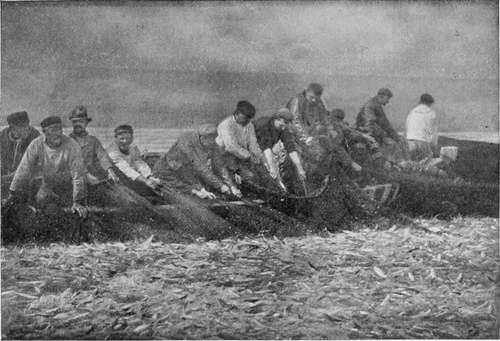

Factorial Or Time Development
Description
This section is from the book "The Barnet Book Of Photography", by Herts Barnet. Also available from Amazon: The Barnet Book Of Photography.
Factorial Or Time Development
No article on negative-making or extended reference to development would to-day be complete without including at least a brief explanation of what is termed time development, a system introduced more than ten years ago by Mr. Alfred Watkins, whose arguments in its support are so difficult to controvert that, although there are many, particularly amongst older workers, who dispute its efficacy, it may be confidently recommended to the beginner, who, having once mastered its simple rules, will find that they more surely guide him to success than if he relied on his own unripe judgment and unskilled eye. Even the expert, deceived perhaps by appearances, will occasionally allow the plate to remain too long in the developer or will remove it too soon ; but in time or factorial development we have a simple arithmetical formula whereby to solve that always difficult problem, " when to stop development".
In the following brief description of time development it may strike the student that there are some points which are in conflict with the teachings of what has already been said with reference to modifying or controlling the development, and these points have given rise to frequent controversy. This, however, need not concern the reader. He may choose either the older tentative method, as already described, or the newer style of determining development by factors, without troubling to make them agree. Instructions for both are given him in this article ; but if the reader's experience be but slight he will do well to forthwith adopt tne " time " method, and he will learn that success is easier to attain oy learning and applying a fixed rule than by depending on personal judgment.
In the instructions already given for development it was stated that by modifying the constituents of the developer the degree of density, etc, could be controlled ; on the other hand, it may be shown that—
(a) All developers have equal power in bringing out detail if the plate be left long enough; the addition of bromide merely delays it.
(b) All developers are nearly equal in density-giving power if only development be continued long enough. Exception may have to be made in the case of a developer like pyro, which gives a coloured image or stain in addition to the ordinary black deposit, thereby producing an increased density.
(c) When comparing similar exposures 'treated in different developers, if each is taken out when the highest light—that is, the greatest density—is alike in the two. Every other tone will also be exactly equal, provided that the time has been long enough to bring out the lowest tone in each. (Large variation in the amount of bromide would affect the principle).
Here are three fundamental principles which the reader may accept without attempting to verify, and Mr. Watkins insists that the addition of bromide or the reduction of the proportion of alkali only affects the formation of gradation if the alteration is made before the developer is poured on, the only power of control over contrast or density being the length of development. He urges that all photographers employ this power even when they think they exercise other means. A man wishes to get thinner negatives with less contrast than he has been getting, so uses a dilute developer and develops for his accustomed time. He gets his desired result, but puts it down to a special virtue in the weak developer, whereas he would have secured the same result if he had only taken the negative out a little earlier. The broad rule, then, is longer development, greater contrast.
Now, the main principle on which time development is based is this, that any change of temperature (and temperature affects development to a marked degree), or any change in the amount of alkali which lessens or increases the time required to obtain a certain degree of density or contrast also alters in exactly the same ratio the time which elapses before the first darkening of the plate begins, so that, if we once ascertain that the time required for full density is so many times the period which elapses before the first appearance, then the plate may be always developed for a given multiple of the time of appearance, and a standard amount of contrast will always result. This multiple is called the multiplying factor.
We proceed, then, as follows :—
The developer being mixed, place the plate in the dish, and at the moment the hand of your watch touches an even minute pour the developer on and rock the dish ; the moment the high lights appear on the creamy surface note the time.
The time that has elapsed between pouring on and the first appearance is the time of appearance, and this multiplied by the multiplying factor gives the total time of development.
To take an example. Suppose we are using the metol-hydroquinone developer given on page 16, and suppose also that the multiplying factor which will give the amount of contrast we require to be 14. Again, let it be supposed that between pouring on the developer and the first darkening of the high lights 20 seconds elapses, then 20x14 will give 4 minutes, and when development has proceeded for 4 minutes with absolute confidence that development is complete, without the necessity of examining the negative, it is"; taken out, rinsed, and passed into the fixing bath. If with the next plate the image should appear more quickly, say, in 10 seconds, then, multiplying this shorter time of first appearance by 14, we get 140 seconds, or 2§ minutes, which will be the total time of development to attain the same density as the previous more slowly appearing negative attained. On the other hand, suppose we desire another plate to possess more contrast, we increase the multiplying factors say, from 14 to 20 and multiply the time of appearance by that.
A HAUL OF PILCHARDS. By HUBERT J. ELLIOTT.
This system of timing development is not dependent on any particular developer, and, so long as we do not use one in which the formation of density does not follow very closely on the bringing out of detail, it matters little what developer is used.
Developers vary widely in one respect, and that is the rapidity with which density follows detail; and hence in the list of typical multiplying factors given below it will be seen that they vary as much as from 3^ to 40. In one class of developing agents, such as metol, rodinal, and amidol, the image and all detail appear very early in the course of development, density being attained comparatively slowly. Hence this class are commonly regarded as not giving sufficient density or contrast, simply because the user does not leave the plate in long enough. The multiplying factors for these are, with average formula?, 28, 40, and 18 respectively, high multipliers giving a long time for total development.
In the second class, represented by hydroquinone, pyro, and adurol, the lowest tones or detail appear quite slowly, and by the time they have appeared the high lights have attained considerable density, sufficient contrast then being attained quite rapidly; hence a low multiplying factor gives a sufficiently long total time for development. It is with this class of developers that bromide has most power, for the restrainer is able to hold back the lower tones until the upper ones have full density, and if the plate be taken out at this stage the bromide has altered gradation to a considerable extent. The most convenient developer for time development will be neither the extreme of these classes but one with a medium multiplying factor, and in which density follows the first appearance at a comfortable rate.
The figures given below have been worked out by Mr. Alfred Watkins as a guide, and represent the multiplying factors of the majority of developers in use, or the ratio between time of appearance and the attainment of a desired amount of contrast or density. They must of course be varied according to the photographer's ideal as to the desirable degree of density or for the particular character of negative required by circumstances :—
It will be clear that in the dim light of the dark room the figures on one's watch-dial may not be very easily read, and hence a special clock, called an eikronometer, may be employed, in which a single hand goes round the dial once in 10 minutes. The minute divisions are very large and are plainly marked; a simple sliding scale or calculator multiplies the appearance by the factor, and points to the total time of development.
A modification of the factorial method is known as the sextuple method, in which the factor 6 is adhered to throughout, and the developer diluted so as to make the time of appearance suit the factor 6, but sufficient has now been said to put the beginner in the way of using factorial development, and he may, if need be, refer to Mr. Watkins's " Manual" for any further particulars.
Continue to:
Tags
paper, print, negative, exposure, lens, development, camera, focus